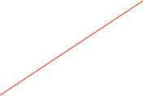

CAEN V812


Set the VME Address
The CAEN Model V812 is a 16 CHANNEL CONSTANT FRACTION DISCRIMINATOR housed in a single width VME module. The module accepts 16 negative inputs and produces 16 differential ECL outputs with a fan-out of two on four front panel flat cable connectors (a functional block diagram is shown in Fig. 1.2). Several version are available, refer to Table 1.1 for details.
Each channel can be turned on or off via VME by using a mask register (Pattern of Inhibit). The pulse forming stage of the discriminator produces an output pulse whose width is adjustable in a range from 15 ns to 250 ns via VME. Moreover, in order to protect against multiple pulsing, it is possible to program via VME a Dead Time during which the discriminator is inhibited from re-triggering. The maximum time walk is ±400 ps (for input signals in the range from -50 mV to - 5 V with 25 ns rise time). The constant fraction is 20%. The constant fraction delay is defined by a delay line network of 20 ns with 5 taps (see fig. 2.2). The discriminator thresholds are settable via VME in a range from -1 mV to -255 mV (1 mV step) through an 8-bit DAC.
The module can operate also with small (below 10 mV) input signals, though in this case the Constant Fraction operation is not performed, i.e. the walk is higher. VETO and TEST inputs are available on the front panel. The front panel is provided with a Current Sum output that generates a current proportional to the input multiplicity, i. e. to the number of channels over threshold, at a rate of -1.0 mA per hit (-50 mV per hit into a 50 Ohm load) ±20 %. A “MAJORITY” output provides a NIM signal if the number of input channels over threshold exceeds the MAJORITY programmed value. The logic OR of discriminator outputs is available on a front panel connector. The relevant “OR” LED lights up if at least one of the unmasked channels is over threshold. The module’s operations are completely controlled via software for each channel through the VME bus. The most important are:
-
• setting the discriminator thresholds (8 bit data) from -1 to -255 mV.
-
• setting pattern of inhibit; each channel can be turned “ON” or “OFF” by using a mask register.
-
• setting output pulse width
-
• setting the Majority threshold value.
-
• selection of the Dead Time value.
The dialog has a page for basic operations and one for settings.
Please refer to the manual for more details.
Load the current set of thresholds into hardware



The write value and the channel to use

Operation to do on the selected register using the current set of values
Extra Info about the selected register
The card’s register list. the current operation will be applied to he selected register. See the documentation that came with the card for more information on each register